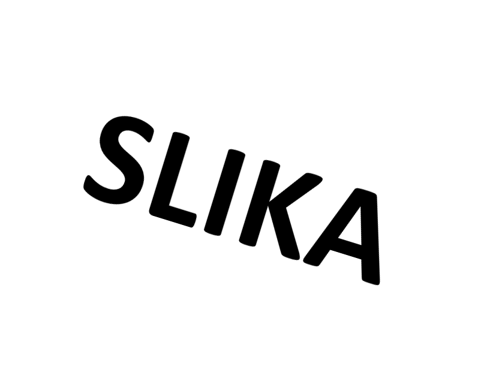
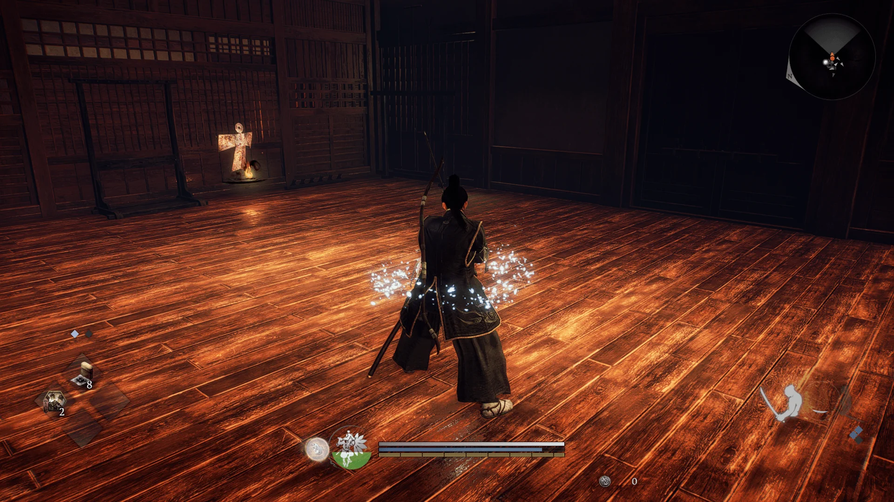
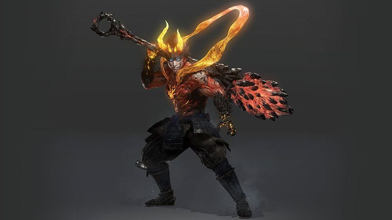
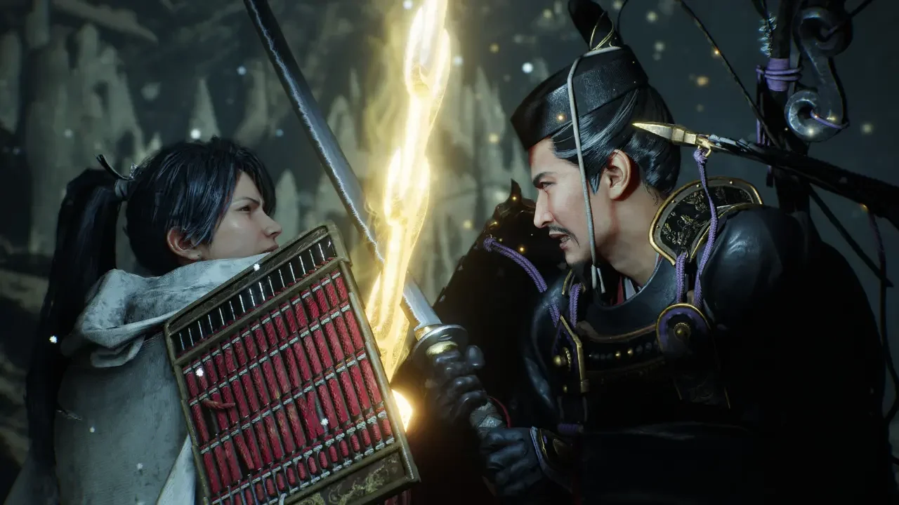
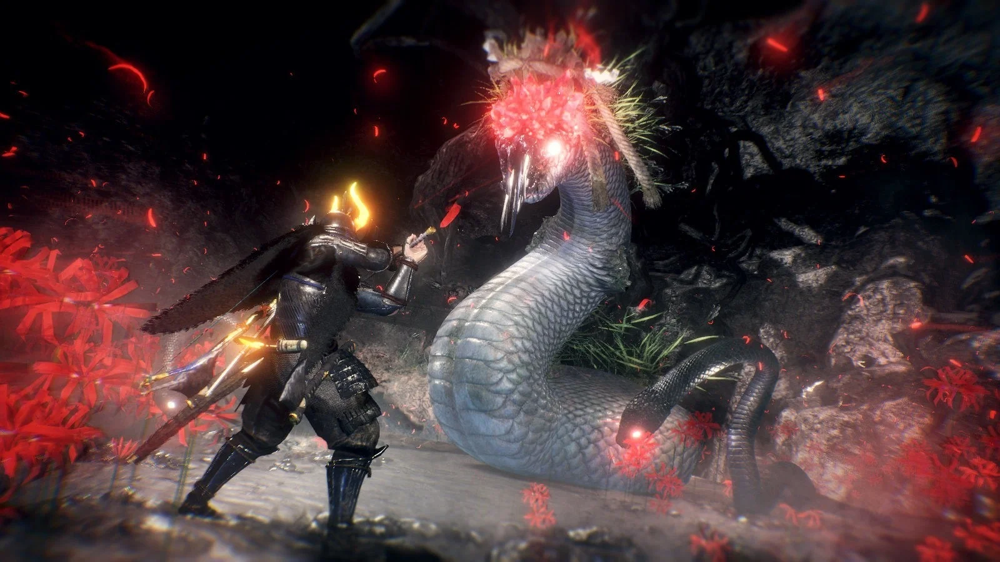
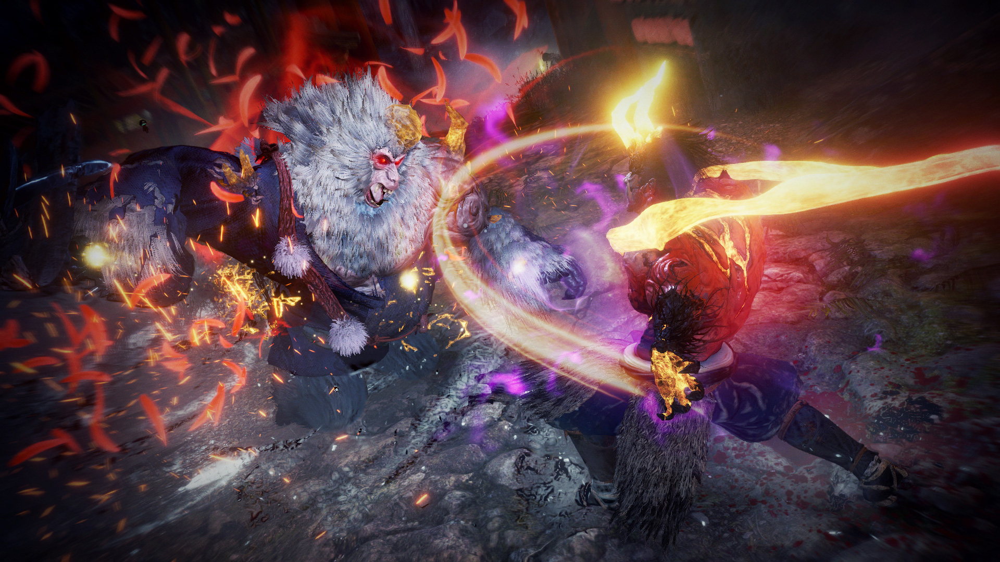
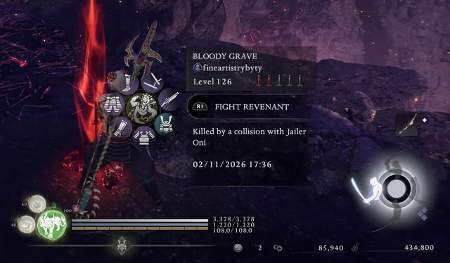
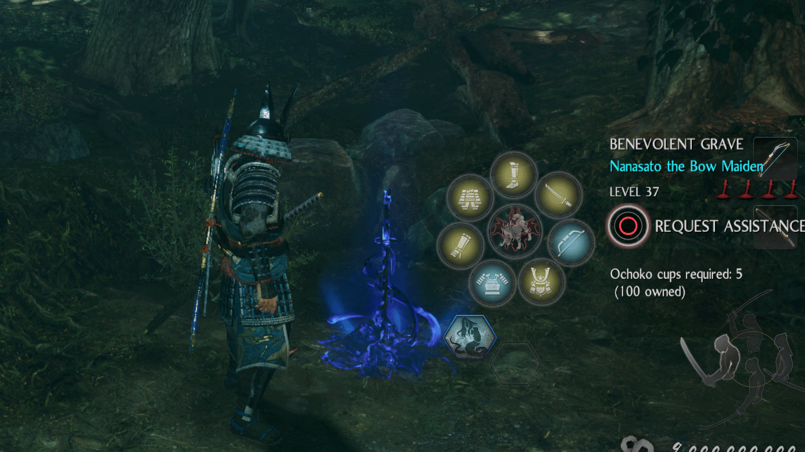
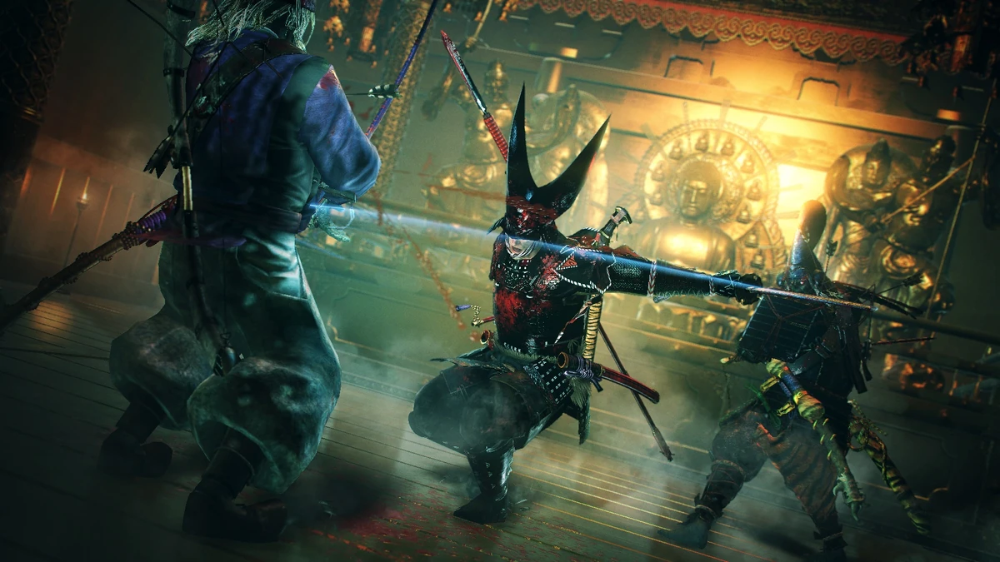

Nioh 2 Wikipedia
Niopedia :)
DLC
Nioh Builds
Character codes
Boss guides
Kodama guides
Missions guides
General info
Character info
Equipment & Magic
Online info
World info
Guides walkthrough
Media community
Nioh 2 wiki guide: Sve o Nioh 2
Nioh 2 Wiki vodič je kompilacija vodiča i informacija za Nioh 2, drugi dio vrlo uspješne Nioh franšize tvrtki Team Ninja i Koei Tecmo. Ovaj Wiki sadrži sve što vam treba u vezi s oružjem, oklopom, vještinama i magijom, mehanikom borbe, konfiguracijom i još mnogo toga. Nioh 2 Wiki je resurs zajednice otvoren za uređivanje od strane svih, a sadrži i informacije korisne za nove igrače koji žele naučiti osnove, kao i za veterane žanra koji žele podijeliti znanje i savjete za prevladavanje izazova igre.
Što je Nioh 2?
Nioh 2 je nastavak igre Nioh studija Team Ninja, koja je izašla 2017. godine uz pohvale kritike i solidan prijem. U originalnom Niohu, igrači su preuzeli ulogu Williama Adamsa, prvog Engleza koji je otputovao u Japan, u fikcionaliziranoj, mračnoj fantastičnoj priči koja prepričava događaje iz ratom razorenog kasnog razdoblja Sengoku. Slično tome, ovaj novi dio franšize odvija se unutar iste ere, iako u ranijem vremenskom razdoblju. Nioh 2 je i prednastavak i nastavak jer se većina njegove priče odvija prije Nioha, a kasniji dijelovi preklapaju se s vremenskom linijom i događajima originalne igre. U njemu igrači preuzimaju ulogu polu-Yokaija kojeg nazivaju "Shiftling", koji pokušava otkriti misterije svog rođenja, a koji na kraju dobiva nadimak Hide (秀, Hide) i sprijateljuje se s Tokichirom, trgovcem koji traži slavu i ostavlja svoj trag u povijesti prodajući Duhovno kamenje. Zajedno putuju kroz eru Sengokua u zemljama zaraženim demonima, svjedočeći i igrajući svoje uloge u usponu i padu likova poput Ode Nobunage te gradeći nasljeđe koje će ih zauvijek promijeniti, bivajući prepoznati kao važne figure u japanskoj povijesti.
Franšiza Nioh najbolje se može opisati kao križanac između serije Ninja Gaiden studija Team Ninja i naslova Dark Souls studija FromSoftware. Kombinirajući visokooktanski, brzi gameplay prvog s modernim pristupom drugog vrlo izazovnim masocore RPG mehanikama, Nioh 2 nudi žestoku borbu prsa u prsa koja zahtijeva vještinu i majstorstvo raznih zamršenih mehanika, kao i duboko razumijevanje obrazaca ponašanja neprijatelja i vlastitih sposobnosti kako biste nadmašili svoje protivnike. Crpi utjecaje slične igri Souls u obliku izgradnje i strukture svijeta gdje opasnost vreba na svakom koraku, a smrt je stalna pojava dok igrači nastoje postići pobjedu kroz nadmoćne izglede.
Nioh 2 nadograđuje elemente originala omiljene među obožavateljima, poput Ki Pulsea i tradicionalne Samurajske borbe, uz uključivanje Hideovih Yokai sposobnosti. Potpuno novi elementi Yokai Shift omogućuju igračima da vješto suzbiju opasne napade protivnika s pravilnim tajmingom, crpe duše drugih Yokaija za izvođenje razornih poteza ili se potpuno transformiraju u jedan od tri moćna Yokai oblika na ograničeno trajanje, dajući im ogromnu snagu i izdržljivost kako bi lakše preokrenuli tijek bitke.
Nioh slavno spaja stvarne povijesne prikaze događaja i lokacija iz razdoblja Sengoku s mračnim fantastičnim okruženjem prožetim nadnaravnim elementima japanske mitologije i folklora. Ti elementi i teme također su prisutni u Niohu 2. U ovom fiktivnom prepričavanju, igrači će naići na povijesne osobe i likove koji su igrali važne uloge u tom razdoblju. Oni će svjedočiti kako se događaji odvijaju s obje strane tekućeg rata i kako demonski Yokai pustoše zemlje drevnog Japana.
Pripremi se za borbu svog života dok preuzimaš ulogu Hidea, otkrivaš istinu o svom porijeklu, otključavaš snagu Yokaija u sebi i igraš svoju ulogu u burnom razdoblju japanske povijesti.
Ključne značajke Nioh 2
Nioh 2 prepun je dušom trijumfa Team Ninje iz povijesti tvrtke brzih, vrlo izazovnih igara sa zamršenim borbenim sustavima naglašenim pretjeranim stilom i raskoši. U kombinaciji s iscrpljujućom težinom i modernim akcijskim RPG senzibilitetom visoko hvaljenih Soulslike naslova, Nioh 2 nadograđuje mehaniku uspostavljenu u originalnoj igri kako bi pružio iskustvo o kojem će se pričati godinama koje dolaze.
- Povijest susreće fantaziju - Izgradite svoju legendu u ovom prepričavanju ratom razorenog kasnog razdoblja Sengoku u japanskoj povijesti. Krenite na putovanje kao tajanstveni Hide koji je u akciji dok otkriva moć koja spava u njima. Ugasite požare ratom razorene zemlje koju su opustošile demonske horde dok svjedočite povijesnim događajima koji se odvijaju.
- Upustite se u opasnu borbu - Nioh 2 je akcijska RPG igra s naglaskom na frenetičnoj borbi prsa u prsa koja zahtijeva punu koncentraciju i vještinu. Savladajte zamršene i smrtonosne vještine samuraja kao žestoki hibridni ratnik čovjeka i Yokaija koji se suočava sa svojim nadnaravnim sposobnostima. Naučite obrasce ponašanja neprijatelja dok prolazite kroz izazove metodom pokušaja i pogrešaka te analizirajući svoje i protivničke sposobnosti.
- Ovladajte Ki pulsom - Središnji dio borbe u Nioh 2 je mehanika Ki i Ki pulsa. Ki je unutarnja životna sila koja pokreće svaku vašu akciju, od napada do izbjegavanja i blokiranja. Nakon svake borbene akcije imat ćete kratki prozor u kojem možete izvesti Ki puls kako biste povratili veliki dio svog potrošenog Ki-ja. Ova mehanika je ključna za kontrolu toka borbe i omogućuje vam da nizate smrtonosni lanac napada, ne dajući svojim protivnicima milosti.
- Trenirajte sa smrtonosnim arsenalom - Ovladajte kultnim oružjem samurajskog doba. Od katana, preko dvostrukih oštrica, split-stavova, sjekira, tonfi i masivnog odachija - svako oružje ima namjensko stablo vještina pomoću kojeg možete poboljšati svoju vještinu i naučiti vještine za svoj omiljeni izbor oruđa ratovanja.
- Suočite se s okrutnim neprijateljima - Osim odmetnutih samuraja, bandita, lovaca i drugih humanoidnih protivnika, na svakom koraku dočekat će vas puna snaga demonske vojske Yokai. Ova stvorenja potječu iz izuzetno bogate japanske mitologije i folklora koji prevladava čak i u današnjim modernim umjetničkim djelima. Od proždrljivih i hrane lišenih duhova poznatih kao Gaki, zmijske djevice Nure-Onne, groteskne nakaze Waire, do uistinu zastrašujuće i ubojite vještice Yamanbe, Nioh 2 ugošćuje ogromnu skupinu legendarnih stvorenja, od kojih je većina neprijateljska i služi kao ometanje vašeg napretka, ali neka bi se ipak mogla pokazati kao blagoslov na vašem putovanju.
- Oslobodite Yokaija u sebi - Nioh 2 uvodi novu mehaniku u obliku igračevih Yokai sposobnosti. Kao hibrid čovjeka i Yokaija, protagonist može usmjeriti svoju unutarnju moć kako bi se transformirao u Yokaija s jednim od tri oblika. Ovaj mehaničar može se koristiti za suprotstavljanje najmoćnijim neprijateljskim napadima kako bi ih učinio ranjivima, usmjeriti sposobnosti drugih Yokaija putem Soul Cores kako bi uništio protivnike demonskim vještinama ili se potpuno transformirati na ograničeno trajanje i dobiti veliku snagu kako bi preokrenuo tijek bitke. Yokai oblici usklađeni su s raznim Duhovima čuvarima koje će igrač susresti na svom putovanju, dajući razne pogodnosti i blagoslove ovisno o opremljenom duhu.
- Stvorite svoje nasljeđe - Iako je protagonist vrlo labavo zasnovan na stvarnoj povijesnoj figuri Toyotomi Hideyoshi, njegove karakteristike i izgled u potpunosti su prilagodljivi igraču. Nioh 2 ima jedan od najrobustnijih sustava za stvaranje likova u svim igrama i omogućit će igračima da fino podese svoj izgled, uključujući Hideov spol, kako god žele. Team Ninja također uvelike crpi inspiraciju iz hardcore RPG naslova, posebno Souls igara, prilikom izrade mehanike napredovanja likova koja sadrži duboke sustave napredovanja i prilagodbe kako bi omogućila potpunu kontrolu nad Hideovim atributima, statistikama, snagama i slabostima.
Nioh 2: Mehanike i značajke igre
Nioh 2 je akcijski RPG koji crpi inspiraciju iz modernih "masocore" naslova, posebno serijala Souls, koji su uspostavili ono što su danas osnovni elementi žanra kao što su duboko napredovanje i mehanika prilagodbe, nevjerojatno teški susreti koji zahtijevaju puno pokušaja i pogrešaka, koncentracije i vještine, mehanika "lomače" koja služi kao kontrolne točke i središte usred misije za napredovanje i fino podešavanje vašeg lika, duboko predanje i pripovijedanje koje se odvija kroz opise predmeta i okruženje, te mnogo više. Ovaj odjeljak analizira ključne mehanike igranja i značajke koje čine svijet Nioh 2, dajući igri i franšizi jedinstven identitet unutar ovog rastućeg žanra igara ispunjenih ekstremnim izazovima i uzbuđenjem.
Borbene osnove i Ki pulse
Oružje i stav
Kao i u svom prethodniku, borba u Niohu 2 sastoji se pretežno od razmjene oružja prsa u prsa, gdje igrači i neprijateljski borci koriste oružje koje je bilo uobičajeno tijekom feudalnog Japana, poput katane, oružja s kopljem u stilu naginate, odachija i složenijih oruđa poput preklopne šape i kusarigame. Ovo oružje za obje strane nadopunjuje niz oružja za daljinsku borbu poput lukova, mušketa i prijenosnih topova, kao i razne Ninjutsu i Onmyo Magic čarolije za napad s udaljenosti. Igrači mogu opremiti do dva seta oružja za blisku i daljinsku borbu te se mogu brzo prebacivati između njih tijekom borbe.

Svako oružje za blisku borbu također ima pristup trima različitim stavovima; niskom, srednjem i visokom stavu. Svaki od njih ima svoje vlastite pokrete i imat će različite prednosti u borbi:
- Napadi u niskom stavu su najbrži i idealni za nizanje vrlo brzih kombinacija, ali nanose i najmanje štete. Međutim, niski stav obično vam omogućuje brže i učinkovitije izbjegavanje, a ovaj stav troši najmanje Ki po potezu.
- Setovi poteza srednjeg stava izvrsni su za obranu i držanje neprijatelja na distanci zbog njihove relativno velike brzine i velikih, širokih udaraca koji mogu pogoditi više protivnika odjednom.
- Visoki stav zadaje najsnažnije udarce za bilo koju vrstu oružja u zamjenu za dulje vrijeme navijanja i oporavka, kao i smanjenu sposobnost izbjegavanja i puno veću potrošnju Ki po potezu.
Stavovi se mogu slobodno mijenjati u bilo kojem trenutku tijekom borbe, s određenim sposobnostima i mehanikama koje omogućuju besprijekorniji protok između svakog seta pokreta.
Ki Pulse
Osnove borbe usredotočene su na mehaniku Ki i Ki Pulsa. Ki mjerač djeluje kao glavni resurs koji se koristi za pogon vaših poteza i sposobnosti. To je predstavljeno zelenom trakom ispod vašeg zdravlja na HUD-u.

Napad, blokiranje, izbjegavanje i sprintanje iscrpljuju određenu količinu Ki energije koja se automatski nadopunjuje na temelju vaših statistika. Međutim, kako bi se maksimizirala učinkovitost borbe, igrači bi se trebali upoznati sa sposobnošću Ki Pulse. Nakon izvođenja napada ili niza napada, pojavit će se kratki prozor u kojem je igrač okružen vrtložnim plavim svjetlom. Unutar ovog prozora mogu pritisnuti gumb Ki Pulse (zadano R1 na PS kontrolerima) kako bi centrirali svoju energiju i povratili dio potrošene Ki energije. Vrijeme varira ovisno o potezu i postoje optimalni trenuci u kojima će Ki Pulse pružiti najveću korist.
Kako napredujete i dobivate pristup većem broju vještina, moći ćete poboljšati i svoju sposobnost Ki Pulse, što će vam omogućiti izvođenje podviga poput Ki Pulsiranja dok izbjegavate, mijenjate stavove, pa čak i dok prelazite na sekundarno oružje, stvarajući besprijekoran protok između vaših sposobnosti dok učite i svladavate ovu ključnu komponentu bitke.
Skill Tree
Nioh 2 također ima dubok sustav stabla vještina koji obuhvaća svaki borbeni aspekt vašeg lika. Svaka vrsta oružja ima svoje individualno stablo vještina, a postoje i četiri dodatna stabla vještina usmjerena na vaš stil igre; Samuraj, Šiftling, Ninja i Onmyo Magija.
Svako od ovih stabala vještina sastoji se od grananja čvorova sposobnosti pasivne i aktivne varijante vještina koje igrači mogu otključati kako napreduju. Svako stablo vještina ima svoj vlastiti skup bodova vještina koji se mogu zaraditi kontinuiranim korištenjem određene vrste oružja ili stila igre i stjecanjem iskustva za njih. Postoje i posebni predmeti koje možete nabaviti, a koji će vam dati bodove vještina u određenom stablu.
Oslobodite demona u sebi
Kao hibrid čovjeka i Yokaija, imate mogućnost kanalizirati svoju Yokai krv i preuzeti jedan od tri smrtonosna oblika u borbi: brutalni (icon nioh 2 wiki guide), divlji (icon nioh 2 wiki guide) divlji (Feral) i fantomski (icon nioh 2 wiki guide) oblik. Oblik koji preuzmete ovisi o Duhu čuvaru kojeg ste opremili. Duhovi čuvari su eterična stvorenja iz japanske mitologije koja vašem liku daju razne pasivne blagoslove, a svaki od njih je usklađen s oblikom Brute, Feral ili Phantom Yokai. Igrači imaju pristup trima vrstama Yokai sposobnosti s različitim učincima i primjenom u borbi:
Burst Counter
Protivnici s kojima se suočavate ponekad će koristiti snažne napade zvane Burst Attacks (Rafalni napadi) koji se ne mogu blokirati i nanose ogromnu količinu štete vašem zdravlju i Ki ako pogode. Iako se ovi napadi mogu izbjeći, učinkovitiji odgovor je korištenje sposobnosti Yokai Burst Counter (Protuudar). Ovo je vještina brze reakcije koja troši 1 segment Anima Gauge-a, ljubičaste trake ispod vašeg Ki-ja koja se puni dok zadajete napade prsa u prsa na protivnike.
Svaki Yokai oblik ima zasebnu animaciju Burst Countera s različitim svojstvima:
Brute burst vas na kraju pripremi za snažan udarac koji pogađa u širokom luku koristeći vaše ruke. Iako je ovaj potez teško izvesti zbog vremena, također vam omogućuje da povežete svoje standardne napade s brojačem rafala i obrnuto. Bruteov brojač rafala učinkovit je za napade svih vrsta.
Feral burst uzrokuje da juriš naprijed i udaraš kako bi parirao protivniku. Ovaj potez nije samo najlakši za tempiranje, već i daje veliku mobilnost. Osim što suzbija protivnički nalet, Divlji protunapad može se koristiti i kao brzi bijeg kada vam ponestane Ki-ja.
Phantom burst uzrokuje da zavrtite oružje svog Yokai oblika dok čvrsto stojite na mjestu. Ovaj potez se izvodi vrlo brzo i najučinkovitije smanjuje protivnikov Ki, ali mu nedostaje mobilnosti i može biti teži od tri protuudara.
Burst counter važan je alat u igračevom arsenalu za upravljanje najmoćnijim neprijateljskim napadima i stjecanje prednosti u borbi. Svaki protivnik ima drugačije vrijeme za svoje rafalne napade i igrači će se morati prilagoditi svakom susretu.
Yokai skills
Yokai vještine su posebni napadi koje daju Soul Cores. Prilikom pobjede nad Yokaijima, mogu ispustiti svoju Soul Core koju možete pokupiti i pročistiti u bilo kojem Svetištu unutar misije. Međutim, ako umrete prije nego što uspijete pročistiti svoje Soul Cores, zauvijek ćete ih izgubiti. Nakon pročišćenja, mogu se uskladiti s vašim trenutno opremljenim Čuvarskim Duhom, a njihove vještine mogu se koristiti u borbi trošenjem Anima mjerača.
Svaka Yokaijeva Jezgra Duše ima jedinstvenu vještinu s različitim učincima i može vam pomoći da steknete prednost u borbi. Međutim, igrači su u početku ograničeni na 2 Jezgre Duše po Duhu Čuvara, s mogućnošću otključavanja trećeg mjesta kako napredujete u igri. Svaka Jezgra Duše također ima cijenu opreme i ne možete premašiti maksimalni kapacitet duše svog Duha Čuvara. Svaka Jezgra Duše također pripada usklađenju Brute, Feral ili Phantom, a usklađivanje jezgri s Duhom Čuvara istog usklađenja može pružiti bonuse poput povećane štete, manje potrošnje Anima ili smanjene cijene opreme.
Yokai Shift
Posljednja Yokai sposobnost u vašem repertoaru je Yokai Shift. Ona vas omogućuje da se na ograničeno vrijeme potpuno transformirate u Brute, Feral ili Phantom Yokai oblik, dajući vam ogromnu snagu, zamjenjujući vaše mjerače zdravlja i Ki s Yokai Shift mjeračem, u biti vas sprječavajući da primate štetu i dajući vam pristup jedinstvenom skupu poteza ovisno o obliku koji poprimite.

Sposobnost Yokai Shifta pokreće kružni Amrita mjerač lijevo od vaših mjerača Zdravlja, Ki i Anime, koji se puni kako apsorbirate Amritu pobjeđujući protivnike, uništavajući sanduke i lonce ili koristeći određene potrošne materijale. Nakon što se mjerač napuni, možete izvesti Yokai Shift i uništiti svoje protivnike u kratkom vremenu. Svaki oblik ima svoje prednosti i nedostatke tijekom Yokai Shifta. Brute ima spore, ali snažne napade koji nanose veliku količinu štete. Feral ima najbrži set poteza i neusporedivu mobilnost putem svojih brzih juriša. Phantom ima superioran domet i teleportacijski potez za brzo smanjenje udaljenosti.
Yokai Shift je moćan adut u vašem arsenalu koji se može koristiti u teškim situacijama kako bi se nadvladali čak i najjači protivnici.
Ninjutsu & Onmyo
Igrači imaju još više alata u svom arsenalu u obliku Ninjutsua i Onmyo magije koji imaju mnoštvo efekata za korištenje u borbi i izvan nje.
Ninjutsu ili Ninja vještine usredotočuju se na prikrivanje i lukavstvo korištenjem bačenih ninja alata poput šurikena i bombi za nanošenje štete iz daljine. Također imaju pristup svitcima koji korisniku daju pojačanja poput poboljšane brzine trčanja, liječenja tijekom vremena ili povećanja brzine kojom poraženi protivnici ispuštaju predmete. Drugi važan aspekt Ninjutsua je sposobnost premazivanja oružja raznim spojevima koji izazivaju statusne efekte poput otrova i paralitičke kukute.

Onmyo magija se fokusira na elementarne efekte i moćne čarolije putem upotrebe talismana. Mnogi od ovih talismana pružaju razorne elementarne napade koji su izvrsni za prorjeđivanje neprijateljske skupine i iskorištavanje elementarnih slabosti protivnika. Onmyo mađioničari također mogu obogatiti svoje oružje elementarnim efektima, dajući oružju mogućnosti elementarne štete na ograničeno trajanje. Onmyo magija je također vješta u jačanju obrane i otpornosti igrača protiv određenih elemenata te može biti izuzetno vrijedna za najteže susrete.

Ninjutsu i Onmyo magija mogu se pripremiti prije misije ili u Svetištu. Ninjutsu alati i Onmyo magični talismani predstavljeni su kao potrošni materijal koji se može dodijeliti vašim brzim utorima za lakši pristup u borbi. Postoji ograničenje koliko određenog Ninjutsu alata ili Onmyo talismana možete pripremiti, kao i gornja granica ukupne količine ovih predmeta koje možete imati odjednom. Oba ograničenja kapaciteta mogu se proširiti ulaganjem u bilo koje stablo vještina, između ostalog.
Opasni neprijatelji cekaju
nekaj bum tu napisal
Zemlje Japana iz doba Sengokua pune su opasnosti i stalne demonske prijetnje. Neprijatelji u Niohu 2 dolaze u obliku standardnih humanoida poput odmetnutih bandita, samuraja i lovaca, opsjednutih pojedinaca i moćnijih Yokaija koji lutaju pustim selima i mjestima.
Mnogi Yokai koje ćete susresti su neprijateljski nastrojeni, a svaki od njih temelji se na lokalnoj mitološkoj i folklornoj literaturi. Svaki ima jedinstvenu karakteristiku, obrazac ponašanja i raznolik skup poteza koji će testirati vašu koncentraciju, vještinu i sposobnost čitanja telegrafa.
Yokai Realms & Dark Realms
Mnogi Yokai koje ćete susresti su neprijateljski nastrojeni, a svaki od njih temelji se na lokalnoj mitološkoj i folklornoj literaturi. Svaki ima jedinstvenu karakteristiku, obrazac ponašanja i raznolik skup poteza koji će testirati vašu koncentraciju, vještinu i sposobnost čitanja telegrafa.

Još opasnija su strašna Mračna Carstva. To su u biti Yokai Carstva mnogo većih razmjera, koja pokrivaju cijele dijelove misije zloćudnom aurom i jačaju sve Yokaije unutra. Mračna Carstva vezana su za jednog posebno zlobnog Yokaija unutar sebe. Mogu se prepoznati po auri Paučjih Ljiljana koja izvire iz tla oko njih. Pobjeda nad ovim Yokaijem pročistit će carstvo i oslabiti sve ostale Yokaije unutra, ako neki još uvijek stoje.

Konačno, mnoge misije će imati Šefa koji čeka na kraju. To su vrlo složeni susreti koji mogu imati mnogo različitih faza koje zahtijevaju specifične strategije i majstorstvo vaših sposobnosti za prevladavanje. Većina Šefova također može cijelu arenu gurnuti u stanje Mračnog Carstva, što susret čini težim za vas kao čovjeka, ali što također možete iskoristiti prelaskom u Yokai oblik.
Amrita, Smrt & Leveling
Napredak lika u Nioh 2 vezan je uz vaše temeljne statistike - Konstituciju, Srce, Hrabrost, Izdržljivost, Snagu, Vještinu, Spretnost i Magiju. Ovo je u biti varijacija tradicionalnih statistika koje se nalaze u mnogim sličnim naslovima i svaka od njih upravlja određenim aspektima vašeg lika. Nakon pobjede nad protivnicima, igrači će akumulirati Amritu - ključnu valutu koja se može uložiti za bodove u bilo kojoj od ovih temeljnih statistika.
U raznim svetištima razasutim posvuda, igrači mogu rasporediti svoju zarađenu Amritu u bilo koju od osnovnih statistika. Ispunjavanje uvjeta Amrite za statistiku povećat će njezinu vrijednost za 1, kao i ukupnu razinu vašeg lika, a svaka sljedeća točka zahtijevat će sve više i više Amrite.
Svaka statistika upravlja nekoliko aspekata vašeg lika kao što su napad, fizička i elementarna obrana, potrošnja i regeneracija Ki-ja, kapacitet Ninjutsu-a i Onmyo-a za magiju i mnogi drugi. Statistike u koje odlučite ulagati također će utjecati na učinkovitost odabranog oružja jer svaka vrsta oružja ima dominantno skaliranje statistika povezano s njom. Na primjer, Kusarigama se prvenstveno skalira na temelju statistike spretnosti i dobit ćete određene bonuse sa svim Kusarigama oružjem za velika ulaganja u ovu statistiku.
Igrači će morati biti oprezni, jer će Smrt uzrokovati gubitak sve vaše akumulirane Amrite, kao i svih nepročišćenih Jezgri Duše koje ste eventualno stekli. Umiranjem ćete uskrsnuti u posljednjem Svetištu koje ste posjetili, a također će se ponovno pojaviti većina protivnika, slično kao molitva u Svetištu. Kada ga opsjedne Duh Čuvar, pokušat će zadržati svu vašu izgubljenu Amritu i nečiste Jezgre Duše na mjestu vaše smrti, a možete ih ponovno steći povratkom na mjesto i dodirivanjem svog groba. Ponovno umiranje prije povratka svom Duhu Čuvaru uzrokovat će da zauvijek izgubite svu Amritu i Jezgre Duše. Budite posebno oprezni pri povratku na mjesto svoje smrti jer ćete ostati bez zaštite svog Duha Čuvara i nećete imati koristi od pasivnih bonusa koje oni daju.

Postoje posebni predmeti koje možete koristiti koji će vam prizvati vaš Duh, zajedno s izgubljenom Amritom i Soul Cores koje ste ispustili, ali koristite ove predmete štedljivo jer su rijetki. Također možete prizvati svog Čuvarskog Duha putem bilo kojeg Svetišta, ali ćete izgubiti sve ispuštene Amrita i Soul Cores. Tijekom svoje avanture naići ćete na potrošne predmete zvane Spirit Stones koji će vam dati određenu količinu Amrite ovisno o njihovoj ocjeni. Oni su korisni za "pohranjivanje" određene količine ove valute i korištenje kada je potrebno, kao što je za povećanje razine neposredno prije borbe s šefom.
Quests & Missions
Ono gdje se Nioh 2 odvaja od svojih Souls inspiracija jest struktura zadataka i misija. Umjesto velikih međusobno povezanih svjetova kakvi se nalaze u naslovima poput Dark Soulsa i Bloodbornea, Nioh koristi kartu svijeta koja prikazuje regije Japana obuhvaćene događajima u igri.
Ono gdje se Nioh 2 odvaja od svojih Souls inspiracija jest struktura zadataka i misija. Umjesto velikih međusobno povezanih svjetova kakvi se nalaze u naslovima poput Dark Soulsa i Bloodbornea, Nioh koristi kartu svijeta koja prikazuje regije Japana obuhvaćene događajima u igri.
Benevolent Graves, Revenants & Online Play
Tijekom Misija, igrači mogu naići na Dobrohotne grobove - oznake s plavom aurom gdje igrači mogu prizvati prijateljskog Akolita koji im može pomoći u borbi do kraja misije ili dok ne budu poraženi. Akoliti dolaze u dva oblika: unaprijed postavljeni koji postoje u Misijama trajno i Akoliti temeljeni na igračima koji su postavili svoje Dobrohotne grobove na određenoj lokaciji pomoću posebnog predmeta zvanog Pravedni Jaspis. U oba slučaja, prizvanim Akolitom upravlja umjetna inteligencija. Također možete postaviti vlastiti Dobrohotni grob i dobit ćete nagrade na temelju broja puta koliko su ga drugi igrači koristili.
Prilikom igranja online možete naići i na Krvave grobove. Ove crvene oznake označavaju mjesta gdje su drugi igrači pali tijekom Misije u svojim svjetovima igre. Možete pristupiti ovim grobovima kako biste prikupili neke informacije o igraču, uključujući uzrok smrti, kako biste dobili naznaku što vas čeka u daljnjoj misiji. Također možete pogledati njihovu opremu i komunicirati s grobom kako biste prizvali igračevog Revenanta.

To su fantomi kojima upravlja umjetna inteligencija s igračevom opremom i sposobnostima protiv kojih se možete boriti. Mogu se pokazati vrlo teškima, ali uspješna pobjeda nad Revenantom nagradit će vas Ochoko peharima koji se koriste za prizivanje Akolita, kao i za pozivanje Posjetitelja u vašu sesiju igre ili pomoć drugim igračima u njihovoj. Također možete biti nagrađeni dijelom igračeve opreme nakon pobjede nad njihovim Revenantom, a ovo je izvrstan način za brzo nadograđivanje vaše opreme, ako ste spremni za izazov.
Za intenzivnije iskustvo suradnje, možete ponuditi Ochoko pehare u svetištu unutar misije, što će vam omogućiti da pozovete druge igrače kao posjetitelje u svoj svijet tijekom trajanja trenutne misije. Možete ponuditi do dva Ochoko pehara odjednom za iskustvo suradnje za 3 igrača.

Na karti svijeta, izvan misija, možete odabrati i početnu točku i funkciju Torii vrata. Odavde možete odabrati slučajne susrete kako biste postali posjetitelj i pomogli drugim igračima u njihovim svjetovima, ali to možete učiniti samo za misije koje ste već završili. Ovo će vas prenijeti u slučajni svijet unutar kojeg je domaćin ponudio Ochoko pehar u svom svetištu.

Također možete ići na ekspedicije iz Torii vrata. To su sesije u kojima možete postaviti uvjete poput misije i razine igrača, a program će pronaći igrače s kojima možete igrati. Unutar ekspedicija postoji mehanika Mjerača pomoći. Kada igrači umru, mjerač će se početi prazniti, ali ih možete oživjeti sve dok se mjerač ne isprazni. To će malo napuniti mjerač i omogućiti vam da nastavite s misijom. Kada je Mjerač pomoći na 0 i igrač umre, misija će završiti neuspjehom. Igrači se također mogu oživjeti po cijenu trošenja puno većeg dijela Mjerača pomoći.
Bas cool znam :O
Nioh 2 DLC & Remaster Info
Sadržaj za preuzimanje (DLC) za Nioh 2 sastoji se od dodataka nakon lansiranja koji dodaju značajnu količinu značajki, uključujući nove priče, misije i zadatke, opremu, šefove, načine igranja i još mnogo toga. To su plaćeni DLC-ovi koji dodaju nekoliko sati igri i imaju slično visoku mogućnost ponovnog igranja. Do sada su postojala 3 takva potpuno opremljena DLC paketa za Nioh 2. U nastavku navodimo najistaknutije značajke ovih dodataka. Pogledajte stranicu DLC-a za sve detalje, kao i informacije o drugom, manjem sadržaju za preuzimanje dostupnom za Nioh 2.

The Tengu's Disciple
Release date: July 30th, 2020 na PS4
Cijena: €9.99
Nakon završetka kampanje u igri Nioh 2 – ponovno oslobodite svoju tamu i ugasite zaostale plamenove rata. Putujte u novu obalnu regiju Yashima i vratite se u prošlost, u posljednje godine razdoblja Heian. Tamo ćete upoznati nove saveznike, suočiti se sa zastrašujućim yokaijima i otkriti vezu između legendarnog Sohayamarua i Otakemarua.
Features:
- Nova regija: Yashima
- Nove misije i zadaci
- Novi neprijatelji i šefovi
- Nova oprema i oružje
- Nove sposobnosti i vještine

The Darkness in the Capital
Release date: October 15th, 2020 na PS4
Cijena: €9.99
Pripremite se ponovno osloboditi svoju tamu u drugom uzbudljivom proširenju za Nioh 2. Vratite se u prošlost u glavni grad Kyoto i udružite snage s legendarnim junacima, uključujući vodećeg japanskog ubojicu demona i najmoćnijeg Onmyo maga u povijesti. Zajedno sa svojim novim saveznicima suočite se s prijetnjom yokaija i otkrijte tajanstvenu vezu između daleke prošlosti i problematične sadašnjosti.
Features:
- Nova regija: Kyoto
- Nove misije i zadaci
- Novi neprijatelji i šefovi
- Nova oprema i oružje
- Nove sposobnosti i vještine

The First Samurai
Release date: December 17th, 2020 na PS4
Cijena: €9.99
Pripremite se za ultimativni izazov u vrhunskom, završnom poglavlju priče Nioh 2. Uzmite oružje i otputujte kroz vrijeme u zemlju legendarnog mladića koji je pobijedio onija. Ovdje će se otkriti Otakemaruova prošlost, tajna Sohayamarua i istina iza prvog samuraja. Kraj vašeg teško stečenog putovanja se bliži.
Features:
- Nova regija: Onigashima
- Nove misije i zadaci
- Novi neprijatelji i šefovi
- Nova oprema i oružje
- Nove sposobnosti i vještine
Sezonska propusnica je također dostupna po niskoj cijeni od 19,99 USD koja uključuje sva tri gore navedena DLC paketa. Ova sezonska propusnica je također uključena u kupnju Nioh 2 Digital Deluxe izdanja.
Nioh 2 Remastered

Kako bi se poklopilo s izlaskom Nioh 2 na PC 5. veljače 2021., Nioh 2 Remaster je dostupan za Playstation 5 sustave. S bržim brojem sličica u sekundi, višim rezolucijama i ultra brzim vremenom učitavanja, Nioh 2 nikada nije izgledao ili se bolje ponašao na konzoli!
Ovaj remaster dostupan je u raznim opcijama:
- Nioh 2 Remastered: Complete Edition (PS4 i PS5) - Sadrži nadograđenu osnovnu igru zajedno s DLC paketima The Tengu's Disciple, Darkness in the Capital i The First Samurai.
- Nioh 2 Remastered (samo nadogradnja) - Dostupno besplatno za igrače koji već posjeduju PS4 verziju Nioh 2
- Nioh Collection - Uključuje remasterirane verzije Nioha i Nioha 2, zajedno sa svim glavnim DLC-ovima za svaku igru.
*Napomena: Igrači koji već posjeduju PS4 verzije bilo kojeg Nioh 2 DLC paketa mogu besplatno preuzeti PS5 verzije.